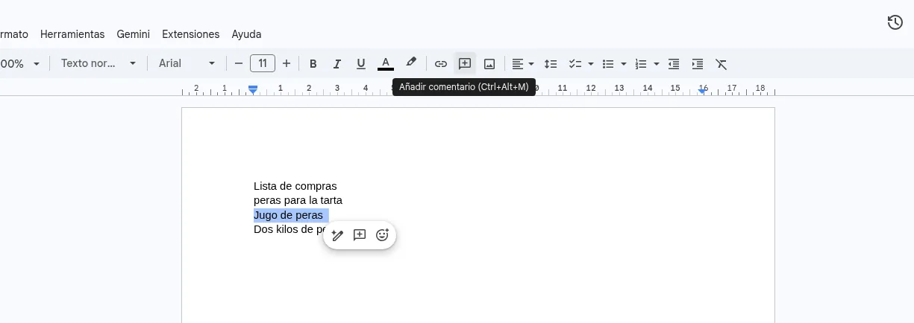
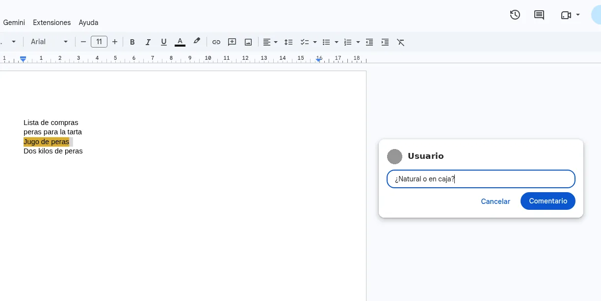
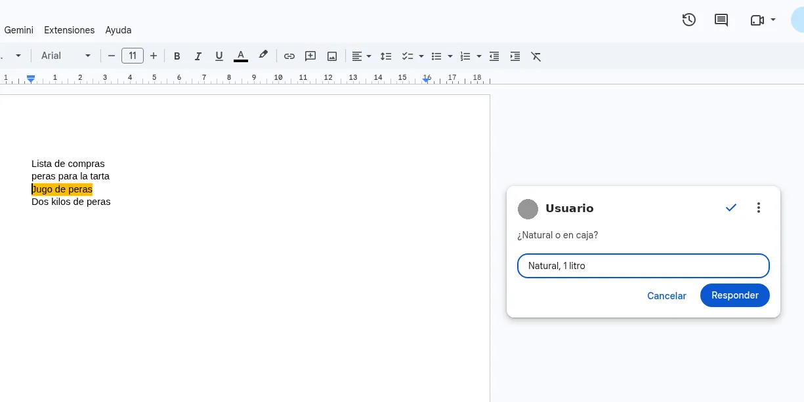
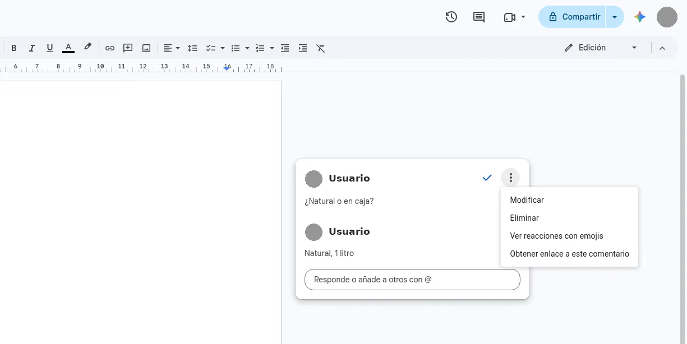
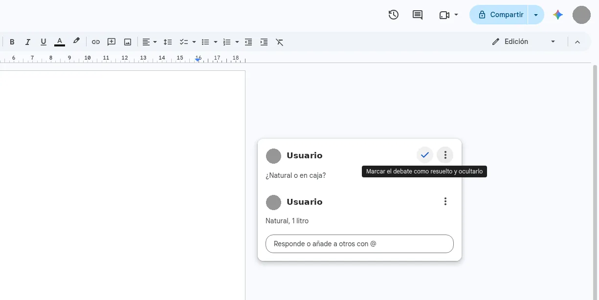
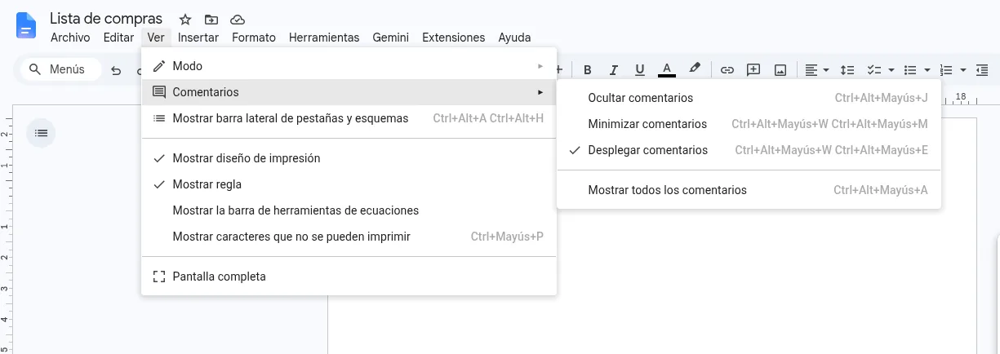
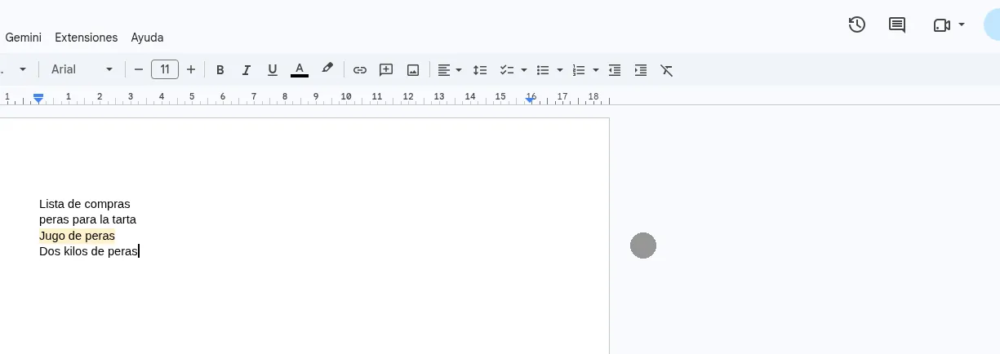
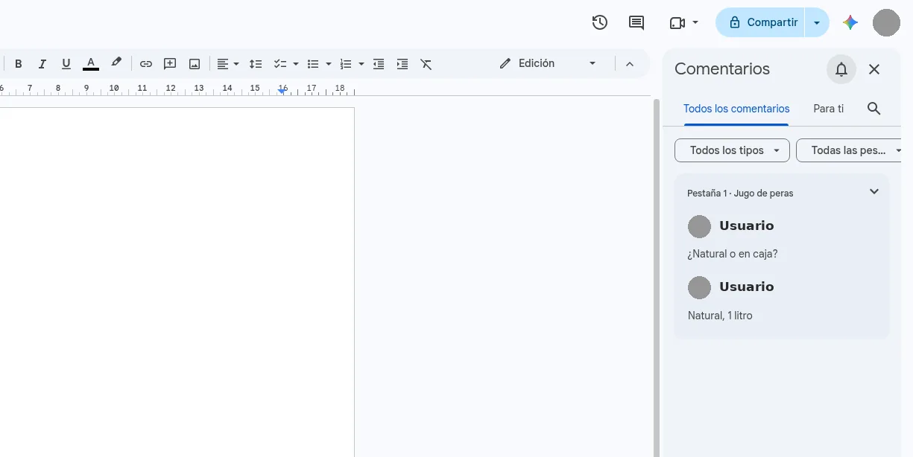

Curso de Google Documentos › Ver › Lección 14
Lección 14 de 53 · menú Ver
Comentarios en Google Docs: insertar, responder y ocultar
Fecha del video: · Programado
¿Querés dejar una nota en un Google Doc sin cambiar el texto? Con los comentarios marcás una parte del documento, preguntás o avisás algo, y la otra persona te responde ahí mismo. Después podés resolverlos, ocultarlos o minimizarlos para leer tranquilo.
En el ejemplo usamos el documento «Lista de compras»: comentamos la línea «Jugo de peras», respondimos y después borramos el comentario. El documento quedó como estaba.
Paso 1: seleccioná el texto y tocá Añadir comentario
Marcá con el mouse la parte que querés comentar. Después tocá el botón Añadir comentario de la barra de herramientas (el globito con el signo +) o apretá Ctrl + Alt + M (en Mac, ⌘ + Opción + M). También aparece el mismo botón flotante al lado del texto seleccionado.

Paso 2: escribí el comentario y tocá «Comentario»
Se abre un cuadro en el margen derecho. Escribí tu nota (en el ejemplo, «¿Natural o en caja?») y tocá el botón azul Comentario. El texto comentado queda resaltado en amarillo y la tarjeta queda en el margen.

Paso 3: respondé en el mismo hilo
Hacé clic en el comentario, escribí tu respuesta en el cuadro «Responde o añade a otros con @» y tocá Responder. Las respuestas quedan debajo, formando una conversación.

Paso 4: modificá o eliminá un comentario
En la tarjeta, tocá Más opciones (los tres puntitos ⋮). Vas a ver Modificar, Eliminar, Ver reacciones con emojis y Obtener enlace a este comentario. Si elegís Eliminar, Google Docs pregunta «¿Eliminar esta conversación de comentarios?» antes de borrarla.

Paso 5: cerrá la conversación con el tilde
Cuando el tema ya está resuelto, tocá el tilde (✓) «Marcar el debate como resuelto y ocultarlo». El comentario desaparece del margen pero no se borra: lo encontrás en Mostrar todos los comentarios, en la sección Resueltos, y desde ahí lo podés volver a abrir.

Paso 6: ocultá o minimizá los comentarios desde Ver
Andá a Ver → Comentarios. Ahí tenés Ocultar comentarios (Ctrl + Alt + Mayús + J), Minimizar comentarios y Desplegar comentarios para volver a verlos completos.

Con Minimizar comentarios cada hilo queda como un ícono redondo en el margen: pasá el mouse para ver una vista previa y hacé clic para abrirlo.

Paso 7: mirá todos los comentarios juntos
Arriba a la derecha está el botón Mostrar todos los comentarios (Ctrl + Alt + Mayús + A). Abre el panel Comentarios con las pestañas Todos los comentarios y Para ti, los filtros «Todos los tipos» y «Todas las pestañas», y la sección de comentarios resueltos.

Tip: con un comentario seleccionado podés usar el teclado: R responde, J va al siguiente, K al anterior, E lo resuelve y U sale. Todos los atajos están en la lista oficial de combinaciones de teclas. Mirá también la lección de el menú Ver completo.
Mirá el Short
Estreno del Short: 28/11/2026 · 09:00 (hora Argentina)
Video relacionado: Google Docs: menú Ver paso a paso (tutorial completo) — el video largo del menú Ver (verlo en YouTube).
Fuente oficial: Ayuda de Editores de Documentos de Google. Capturas propias en un documento de ejemplo («Lista de compras»). El video usa voz generada con IA.